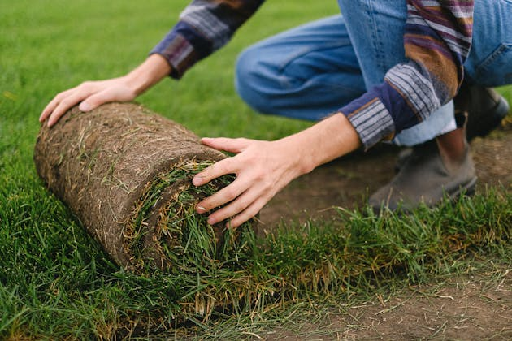

<section id="hero-408">
  <div class="cs-container">
      <div class="cs-content">
          <h2 class="cs-title">Mantenimiento de Jardines {{citySEO ? 'en ' + citySEO.cityName : ''}}</h2>
          <p class="cs-text">
              Mantenemos tus jardines en óptimas condiciones durante todo el año. Nuestro equipo de expertos se encarga de podar, fertilizar, regar y cuidar cada detalle para que tu jardín luzca siempre radiante.
          </p>
          <a href="mailto:avigarden_jarypas@hotmail.com" target="_blank" class="cs-button-solid">Pedir presupuesto</a>
          <a routerLink="/nuestros-servicios" class="cs-button-transparent">otros servicios</a>
       
      </div>
      <div class="cs-stat-group">
          <picture class="cs-background">
              <source media="(max-width: 600px)" srcset="../../../assets/maintenance.jpg">
              <source media="(min-width: 601px)" srcset="../../../assets/maintenance.jpg">
              
          </picture>
       
      </div>
  </div>
</section>
                              